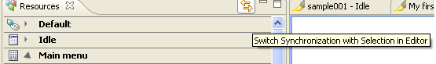

Synchronizing component selection with the Resources view
By default a component selected in the Editor automatically opens the
corresponding branch of the Resources view. This feature can be
disabled
by clicking the Switch Synchronization with Selection in Editor tool
button in the Resources view.

Figure: Synchronizing
components with Resource View
If the synchronize selection with the Editor option is turned off, you
can manually synchronize with the Resource view by opening a component
context menu and selecting Show In
-> Resources View.